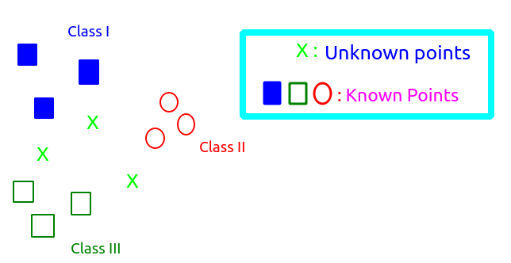

ML
Mr Jhalak Hota


Note : Internally regression and classification are same

~~~~~~~~~~~~~~~~~~~~~~~~~~~~~~~~~
Model : These are rules that segregates the instance(Solution) space
Que: How the models are expressed ?
Sol: 1) Logical Rules - Logical modeling
Ex: Model specifying surviving criterion for Titanic ship logic
2) Geometric - Geometric Modeling
Ex -
3) Probability - Probabilistic Modeling
Ex: Mostly used for classification problems
Baye's Theorem
Note: Let's say we have a scenerio where we just want to analyze the data and find the distances between the observations. So for this we need to use distance metrics.

Using different distance metrices like euclidian, manhatten etc(each used in different scenerios) we found the various distances and come to know that two X which are highlighted with red are closer than the others.
~~~~~~~~~~~~~~~~~~~~~~~~~~~~~~~~~
Methods of learning
1) Least Square Method (Linear Model)
2) K- Nearest Method (Classification)
3) Distance Based Model(Unsupervised Learning)
Que: What is learning?
Ans: Changing the coefficients of the model to achieve a better accuracy in the ML task.
Let's see a scenerio of Linear model,
So as metioned we assumed f'(X) indicating that we try to relate/Map X -> Y using a straight line.
But now there could be many lines like

Each line is identified by its intercpt and slope(as eq of line Y= MX + C ). So during learning we try to adjust the values of M(slope) and C(intercept) so that when we input X it gives correct Y and if it(model) gives for majority of our data then we got the correct model else again we adjust the values of M and C and try again.
In successive classes we will get to know that the changes in intercept(a.k.a bias) is prohibited and mostly changes are done in slope.
Least Square Method (Linear Model)

The Bias (B0) :

Note : During machine learning small change is OK and we mostly change the slope(coefficient B1). If we find the significant change in B0 then the model is prone to overfitting.
Let say the model is represented as
Y= B0 + B1X1 + B2X2
Then during learning values of B1 and B2 are adjusted and we try not to adjust B0.
Que: What is learning Rate/ Rate of learning?
Ans: Amount of change being performed on each iteration.
Let's say at (i+1)th iteration

Que What is the optimal rate of learning? What parameters affect that?
Ans : Will be given after understanding least square method.
Least Square method

Least square method aims to minimize the total Sum of square error(E)
Note: Only suitable for linear Models

Que : Why we taking square on the above equation?
Ans : We square in the above equation so that we get a convex surface(parabola) which
-> Ensures minimizing the error
-> Guides to get the optimized rate of learning.
Let's plot the error vs B(model parameter)
 '
'Now when we developed a model we can lie/spawn at any point on the curve and then need to do the changes in the coefficients to reduce the error. Here comes the major importance of rate of learning. Let say in both the cases we landed at point R1 and now we take different rate of learning in both the cases.

High learning Rate : We may miss the optimal parameter
Low Learning Rate : The convergence is very slow
So, we need to find the optimal rate of learning.
Limitation of Least Square method
-> Works perfectly only with linear models
-> Linear models has it's shortcomings, so as least square
~~~~~~~~~~~~~~~~~~~~~~~~~~~~~~~~~
Distance Based Model (Unsupervised Learning)
→ Mostly used in unsupervised learning.
Let's say we need to do a unsupervised learning(Y is not known). So we try finding the distances between various points to conclude something.
dis(P1P2) < dis(P1P3) < dis(P1P4)
So P2 is closer to P1 than P3.
This is called Distance based model.
~~~~~~~~~~~~~~~~~~~~~~~~~~~~~~~~~
Limitation of liner Model
-> Linear Model don't fit properly for classification
Ex: Let's say in the below graph we want a model to classify blue and Yellow.

In this case we found that Linear model is not appropriate to use/implement.
Now for the case above we need more zig-zag kind of line(model). For the same nearest neighbour model was developed.
Nearest Neighbour Method (Classification)
Let's say we are given following scenerio

Now to know which class the X belongs we need some way to decide that.
Here we'll use/see the neighbours of X to determine which class it should belong to. In order to do that we'll find distance between X and it's neighbours.
Que : We'll calculate the distance but with how many neighbours ?
As you can see that with increased number of neighbours computation will be more.
In mathematical terms we write,
Que : So the question remains the same how many neighbours to consider?
Ans : This kinds of problem is NP- complete problems i.e. non deterministically polynomial hence we can't reach to any particular decision. So we have to go for trial and error(Brute force).
Let's see how our model is affected if we take different number of neighbours.

(Fig1) 15 Neighbours (Fig 2) 1 Neighbour
Que : But which one should we choose?
Ans : Fig 1 must be used. Fig2 is rejected because it doesn't generalise(ability of model to capture the unknown) ,highly overfitted, high variance and low bias.


~~~~~~~~~~~~~~~~~~~~~~~~~~~~~~~~~